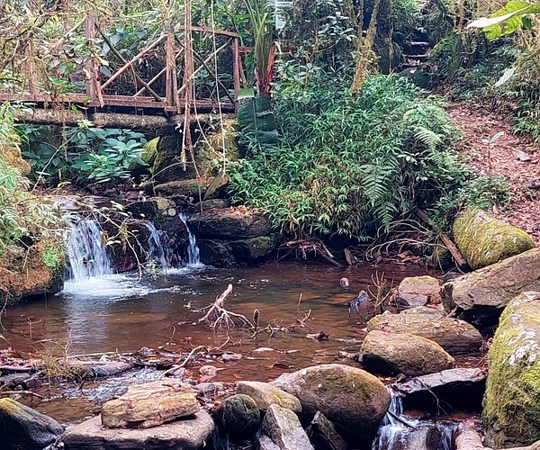

FIANARANTSOA
FIANARANTSOA
Fianarantsoa est une ville des hautes terres de Madagascar, chef-lieu de la région
Haute Matsiatra et du district de Fianarantsoa. Avec ses 191 776 habitants en 2018,
Fianarantsoa est le cinquième plus grande ville de Madagascar
Fianarantsoa se situe sur la RN7, à 410 km d'Antananarivo et à 516 km de Toliara.
Elle se situe également en ouverture vers le sud-est de Madagascar par la RN45 et
vers le moyen ouest du Betsileo

La Parc national Ranomafana
Le parc national de Ranomafana est un parc malgache inclus en 2007 dans le site forêt humide de l'Atsinanana.
Pour atteindre le parc, il faut parcourir 412 km vers le sud-est de la capitale malgache, c'est Antananarivo.
Le parc couvre un peu plus de 41600 ha de collines aux pentes raides, à une altitude comprise entre 600 et 1400m.

Pour atteindre le parc, il faut parcourir 412 km vers le sud-est de la capitale malgache, c'est Antananarivo.
Le parc couvre un peu plus de 41600 ha de collines aux pentes raides, à une altitude comprise entre 600 et 1400m.
Lieu d'attraction
